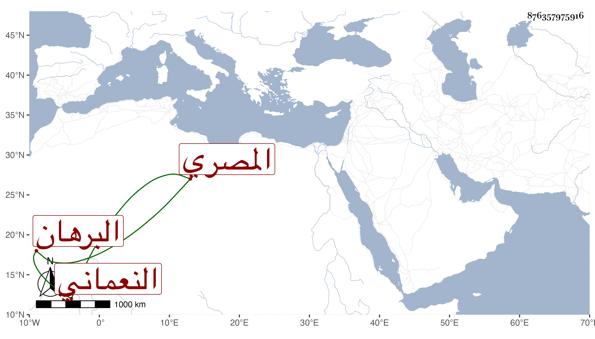

0902Sakhawi.DawLamic.ITO20230111-ara1.EIS1600.876357975916
Biography ID: 876357975916
النعماني بالضم نسبة لأبي عبد الله بن النعمان البرهان إبرهيم بن علي بن أحمد بن بركة المصري وأبو الفتح المنسوب إليه القراءة النعمانية . وللإمام أبي حنيفة محمد بن أحمد بن محمد بن أحمد بن عمر وهو حميد الدين .
